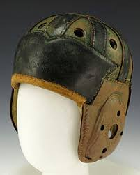

There are many parts and pieces to help keep the players head safe from major blow from other players. There are many different brands, styles and shaped helmets for each position in the sport.
First this site is going to give you some infromation about the football helmet the start and beginning of the evolution of the helmet. Below is the first football helmet ever, as you can see it is just a leather cap.
This is what it looked like when football first started to be played.
Equipped with a Prime facemask for any position on the field, the Xenith® Youth X2E+ Football Helmet is equipped with Aware Flow® shock absorbing technology and an all-new 3DX Jaw Guard, ergonomically designed to provide a better fit for athletes so they can perform their best. Designed for players at the varsity level 3DX Jaw Guard: Engineered for an ergonomic fit, with a repositionable XRD Impact Foam pad for customized comfort Shock suspension system allows the helmet and shell to move independently, mitigating rotational forces Aware-Flow® Shock Absorbers "Adapts to the Hit," providing an optimal response to linear impacts Polycarbonate shell designed for high level impacts